02 / Product engineering
Infant Growth Monitor
A portable system that combines a weighing scale, handheld measuring device, infant measuring mat and companion application for Community Health Volunteers.
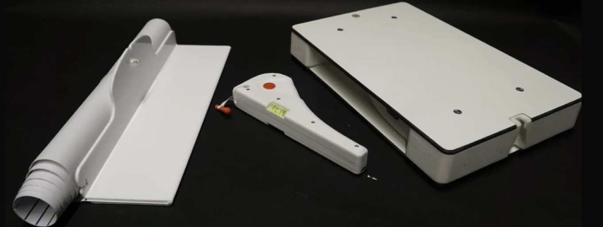
The challenge
Community Health Volunteers in rural Cameroon rely on analogue tools and handwritten records, making measurements harder to transfer into a digital health record. Our team designed an affordable system around the full field workflow: straightforward assembly and repair, durability, usability for volunteers and caregivers, accurate sensor readings, and reliable analogue-to-digital data capture.
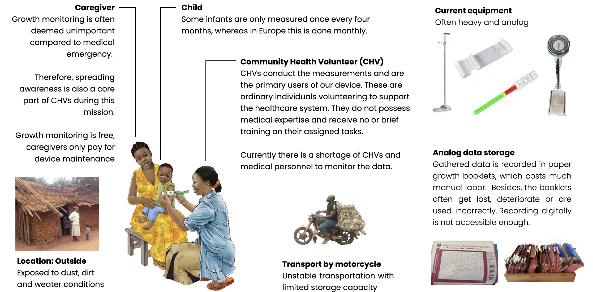
Engineering for field use
The system was developed around the realities of community health work: clear handling, accurate measurements, straightforward repair and assembly, and dependable use outdoors. The following sections bring together the main decisions for each part of the system, including what was demonstrated in the prototype and what remained to validate.
Handheld
Ergonomics and controls
Early tests showed that users could hold the device in the wrong orientation or be unsure how to operate it. Fifteen form concepts were assessed by six participants; model 9 was preferred for supporting the hand. A refined model was then tested by four non-technical participants, who understood how to hold it and described it as comfortable. Curved edges, a wider grip, side recesses and surface texture guide the hand and help prevent upside-down use.
The handheld was kept to two controls: a confirm button and a retract button for the tape. Testing informed their placement for a range of hand sizes and right-handed use: confirm on the side, retract on top. Different-coloured buttons and familiar check and arrow icons make each action easier to recognise. The shape also guides the hand to the correct grip and helps orient the flat side against the patient's head.
Housing, impact and levelling
Screws and internal ribs secure the components in the housing. The report describes a two-metre drop target and a proposed NX drop-test setup, but notes that the analysis did not produce a realistic result because the model and internal masses were complex. Impact resistance therefore remained to be validated with a complete, weighted assembly.
Two small bubble levels let a volunteer check that the handheld is horizontal from either side of the patient. Their placement balances visibility with the centre of gravity and the available space for the battery.
Tape mechanism and repair
The redesigned measuring tape uses a removable spool with a replaceable spring and tape. Compared with the Silvergear mechanism, its disassembly map has fewer multi-step tool actions and non-reusable connectors. A snap-fit cap supports disassembly; the spool is held stable at both ends, and its magnet aligns with the rotary encoder. A low-friction polyamide spool and a narrow, flexible fibreglass tape help keep the device compact. The tape loops around a snap feature so the spring cannot cut through it.
The tape end uses a simple, one-way pin attachment that can be removed by rolling the device down. A rounded marker helps the user find the correct insertion direction. The 3 mm offset and 10 mm-deep slot account for the mat and scale thickness so the physical tape reading matches the digital measurement. A lever-based retract mechanism makes the tape easier to remove and retension during repair; axles and bearings add strength and reduce friction.
Assembly
The exploded handheld view groups parts into two pre-assembled subassemblies, intended to make final assembly faster. It also shows how the housing, tape mechanism, controls, bubble levels, battery and electronics fit together.
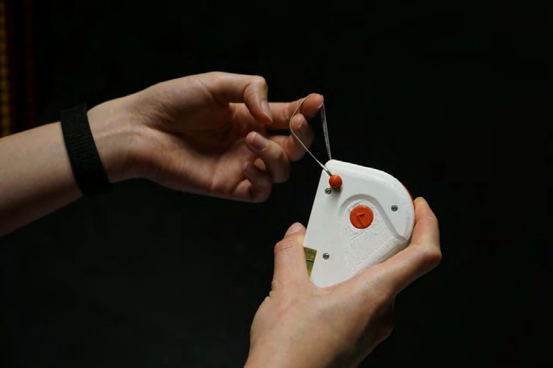
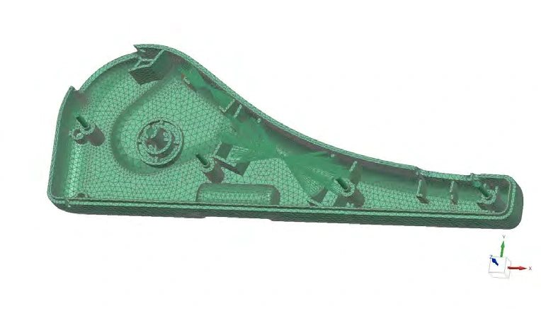
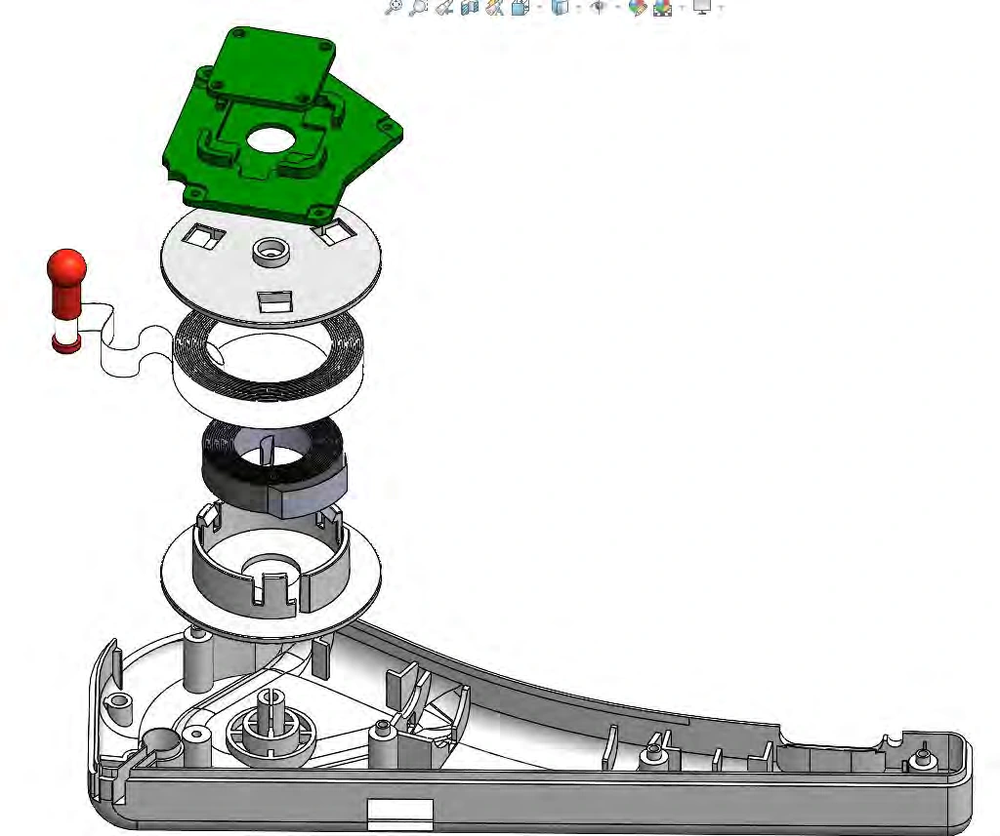
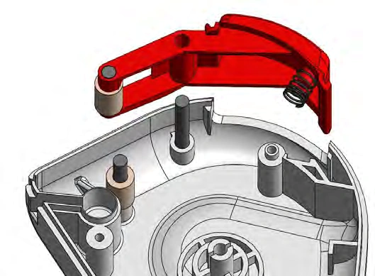
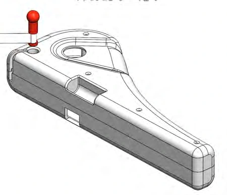
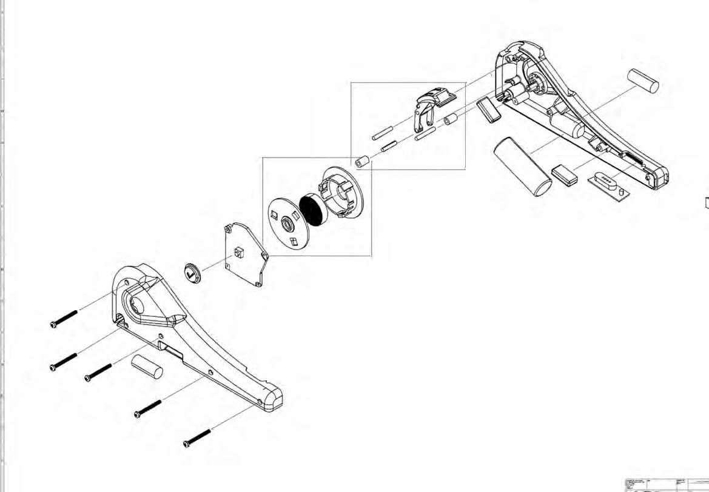
Scale
Deflection and stiffness
The scale was designed to deflect no more than 2 mm under a 100 kg load, and 3 mm under 150 kg. Moving the handheld dock to the centre of the long side reduced interference when the scale flexes and distributed load more evenly. Finite-element comparisons led to a ribbed injection-moulded shell paired with a 6 mm High Pressure Laminate (HPL) top, secured by four M4 bolts. Denser ribs in the upper shell help limit deflection.
Access, cleaning and repair
The design targets IP53 protection and can be opened by hand for cleaning. External snap fingers align and secure the shells without tools or specialist knowledge. Their geometry was checked with finite-element analysis so the clips can flex for opening while staying below the material’s yield strength; a rib limits excessive flex.
Load cells and handheld docking
Four load cells sit at the scale corners. Bolted mounts keep them in position if the scale is dropped and allow a faulty cell to be replaced; the shell’s snap fingers preload the cells to remove play. Magnets hold the handheld against the scale and guide it into position. Moulded sliders retain the magnets beneath the HPL sheet without adding separate fasteners.
Protection, levelling and measurement setup
The load-cell amplifier sits in a separate cavity sealed with O-rings. Wire grooves, silicone and heat-shrink tubing protect the connections, while the load cells and pogo-pin dock remain accessible. A familiar bubble level helps the volunteer find a flat surface; because the scale has no adjustable feet, the volunteer rotates it or chooses another surface. A fixed tape length is shared by the scale, handheld and headrest. Engraved foot outlines cue the person to stand along the long side and keep the scale the right way up.
Calibration and weighing protocol
Because community health volunteers may not have a known calibration weight, the report proposes setting the scale’s calibration factor at the factory. The prototype factor was selected by comparing readings at several settings, but the final design still required calibration. In use, the handheld docks to power the scale, the app asks the volunteer to level it, and the load cells send the person’s weight to the app.
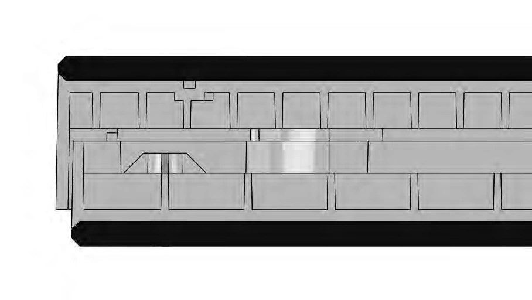
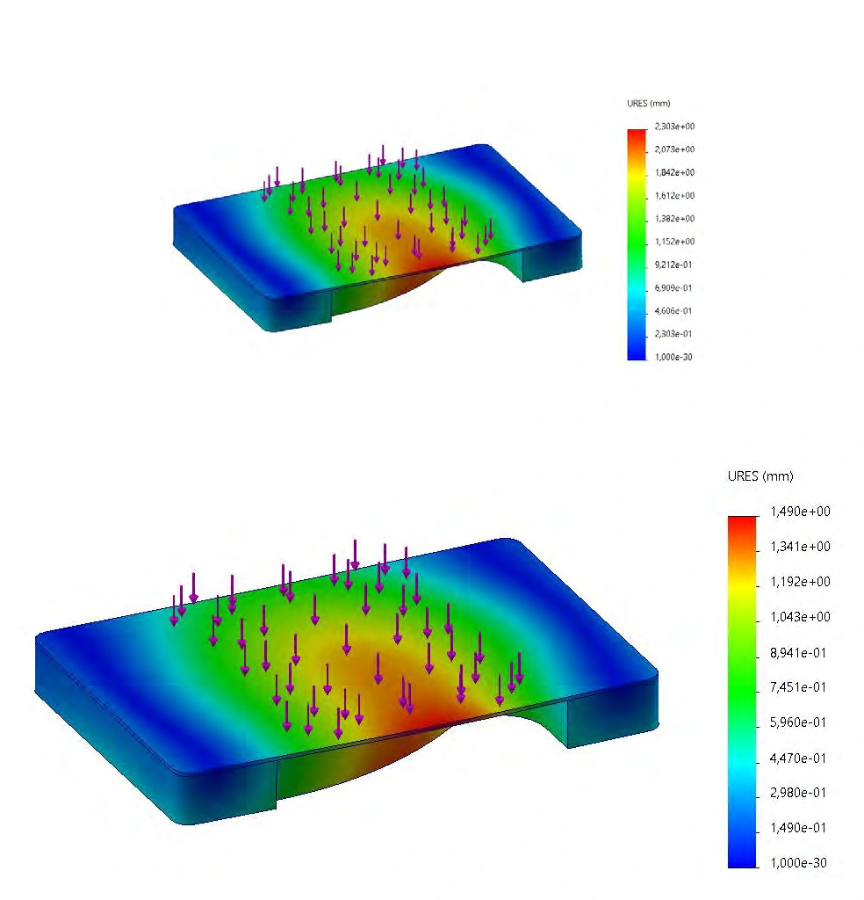
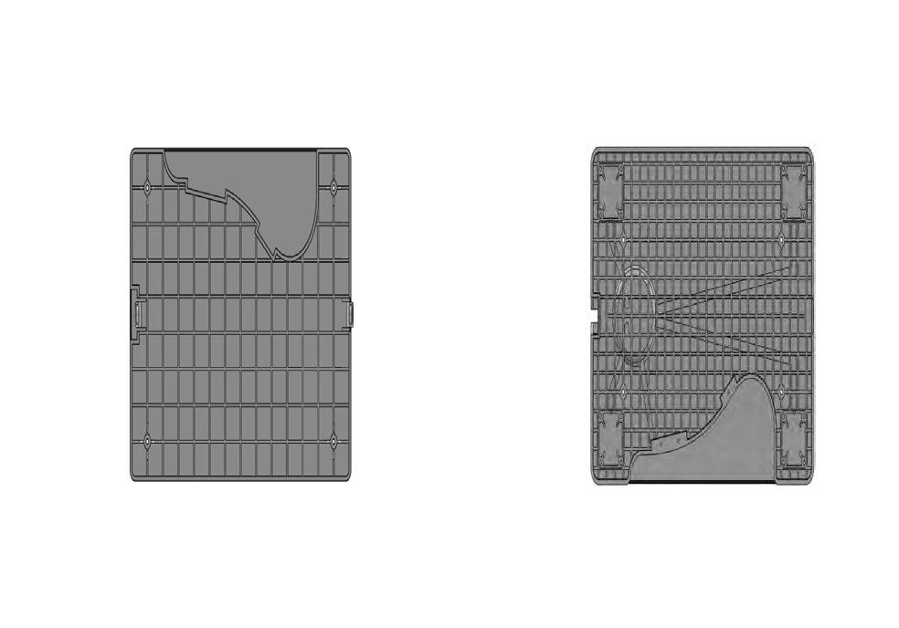
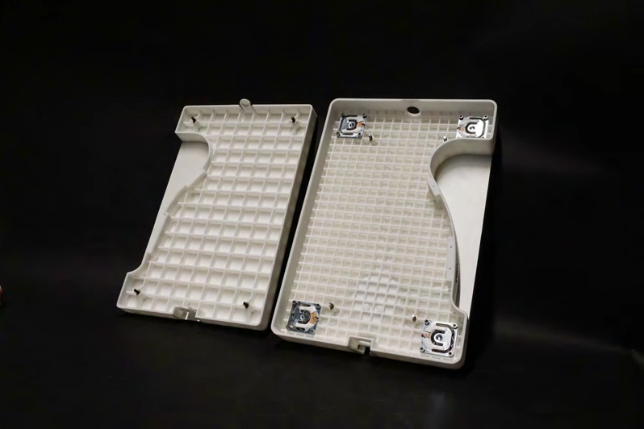
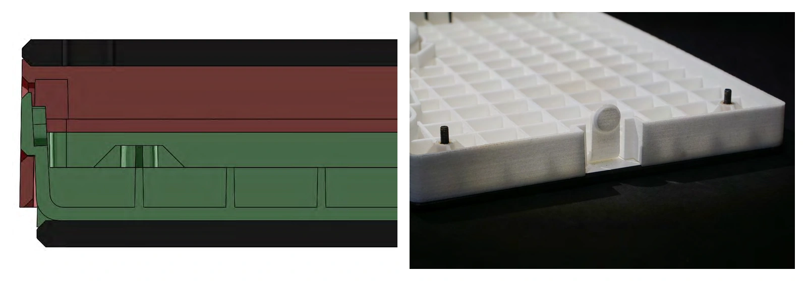
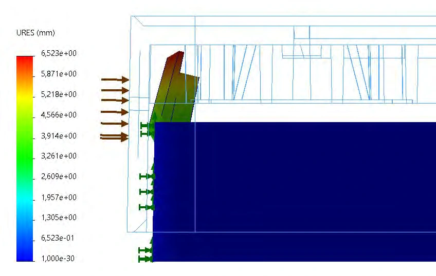
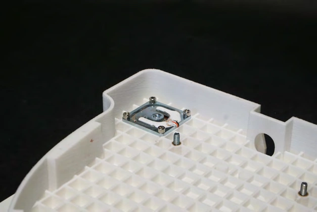
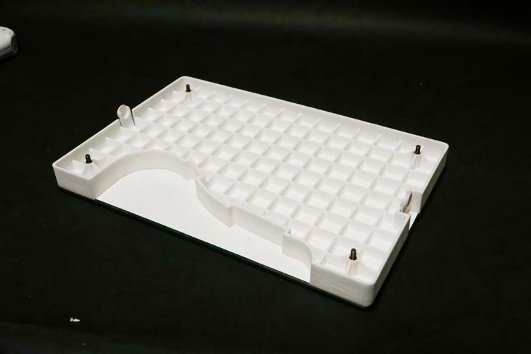
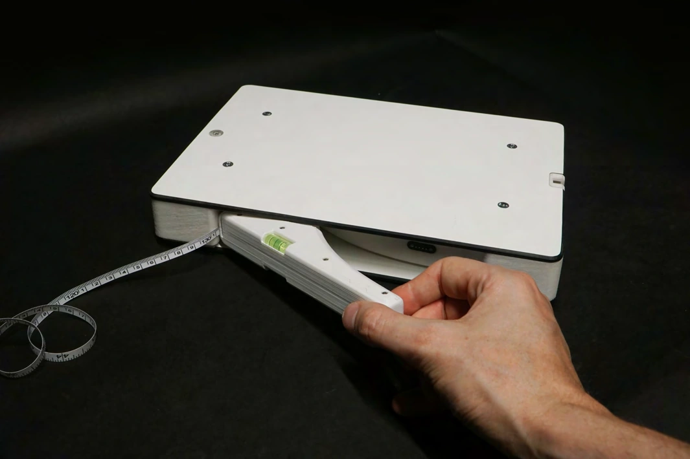
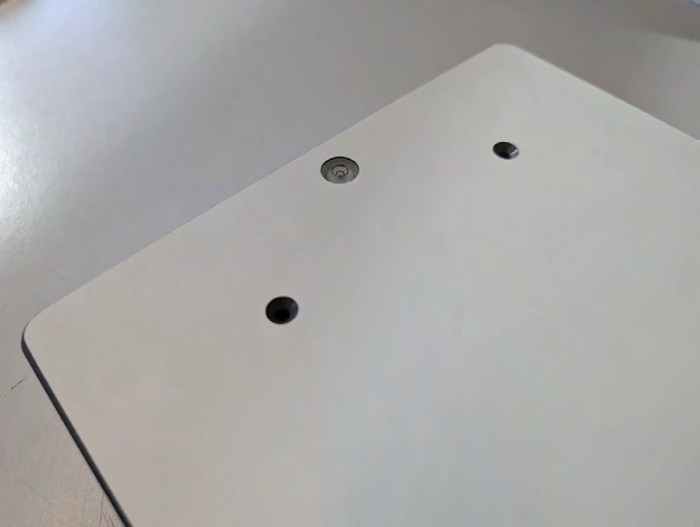
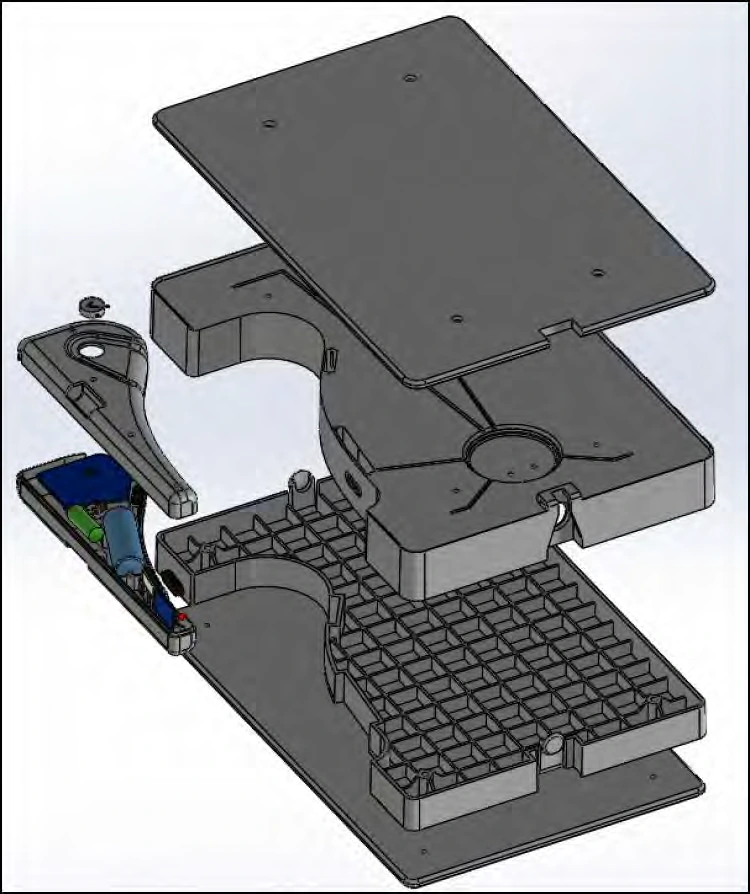
Length measuring mat
Separate headrest and scale
The team chose a removable headrest rather than a magnetic connection to the scale. This avoids extra magnets and lets the mat still be used if the scale is unavailable, though it adds some complexity to the moulded upper shell. The trade-off is a less unified product and a risk that a volunteer could forget the separate mat.
Headrest and repair
The headrest is laser-cut from 3 mm cast acrylic and bent to an L-shape so it can stand on its own. Its tall face supports the infant’s head, while side cut-outs help the caregiver position the child. Double-sided tape secures the mat but also makes damaged parts replaceable. A T-slot connects the measuring tape; a separate slot accepts the elastic toggle that holds the rolled mat.
Storage and mat design
The 100 cm PVC mat rolls up and attaches to the headrest with a common, replaceable elastic band and toggle. This keeps the system compact enough for a 24-litre backpack alongside the scale and allows repairs with readily available materials. Rolling takes care and more time than preferred, and replacing the elastic requires reheating and bending the headrest. The wipe-clean, weather-resistant surface has alignment lines to keep the handheld perpendicular to the headrest. Simplified instructions and a correctly scaled infant illustration guide measurements for children up to about 15 months.
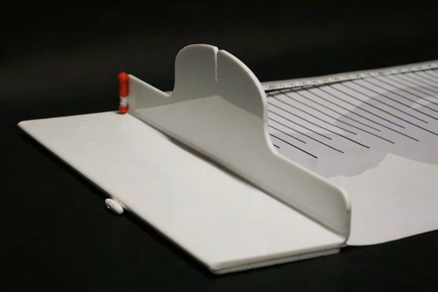
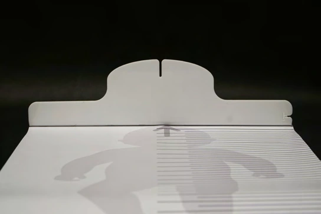
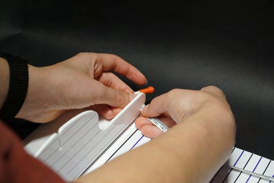
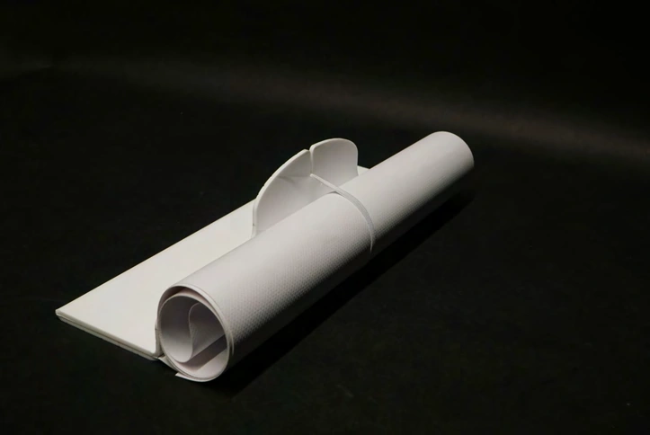
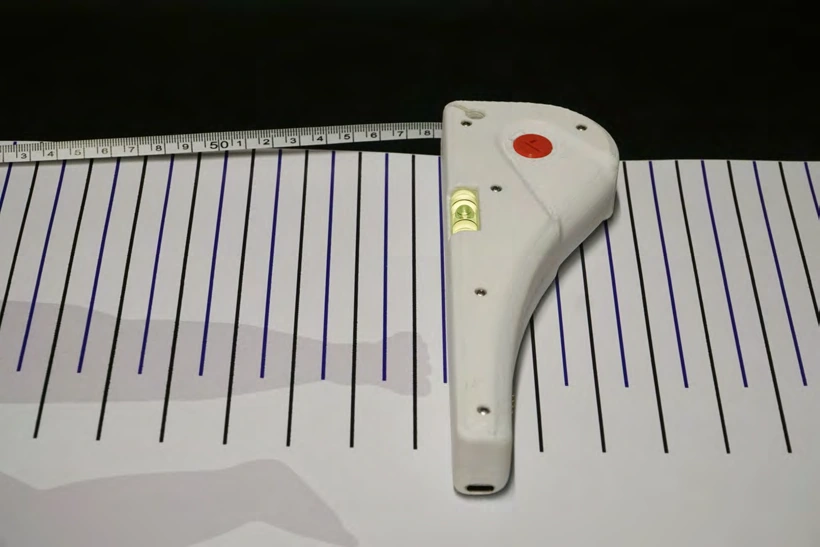
Electronics
System architecture and sensing
The handheld is the system’s master and the scale its slave: the scale receives power and communicates through pogo pins only when docked. This reduces cost and simplifies assembly, but means the scale cannot be used alone. The envisioned handheld uses a main PCB with Bluetooth, a microcontroller and an AS5600 magnetic rotary encoder, plus a separate battery-management PCB that protects against short circuit, overcurrent and over- or undervoltage. The scale contains four 50 kg load cells and an amplifier that digitises their signals; the report specifies a 100 g weighing precision.
The encoder reads a magnet on the tape spool without contacting it. Its 4096 positions per rotation provide angular readings of about 0.08 degrees; the magnet must be centred and held 0.5–2.5 mm from the chip. Software converts rotation to tape length while accounting for the spool’s changing radius.
Power and communication
When the tape has not moved for a minute, the device enters standby and checks the encoder once per second; a transistor cuts power to the scale to conserve energy. The design omits a physical on/off switch because switching off with tape extended could reset the encoder’s position. Bluetooth sends raw measurement data to the app, which performs the conversion and can request a live scale reading. The report favours Bluetooth for remote settings where cellular data or Wi-Fi may be unreliable.
Boards, connectors and prototype limits
The envisioned product uses custom main and battery-management boards. Five pogo pins connect the handheld and scale: one supports charging and four carry scale power and measurement data. Magnets help the pins align, and the connector avoids a separate charging port. A lithium-ion battery was selected for field robustness; the report estimates roughly 30 hours of active use from a 2000 mAh cell based on prototype draw, while noting that final consumption was still uncertain.
The prototype used an Arduino Nano ESP32 rather than the planned custom boards. It also lacked an integrated interactive app: a Bluetooth serial monitor guided the user while the visual app ran on another device. The prototype broke before final calibration, so final accuracy was not established. Earlier tape tests reached about 1 mm accuracy over the first 100 cm. These results describe the prototype and design intent, not a validated deployed medical device.
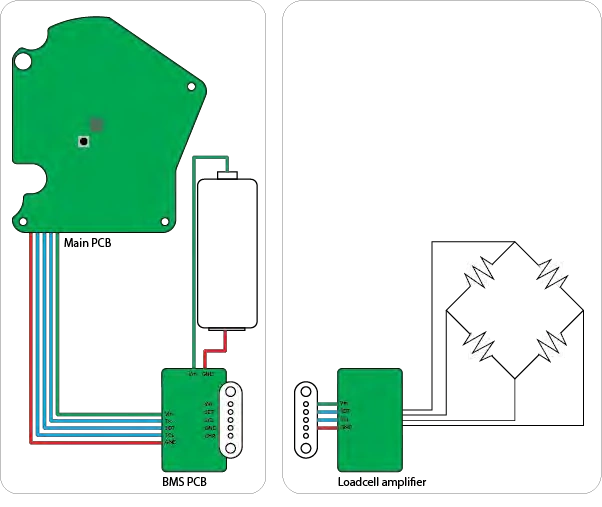
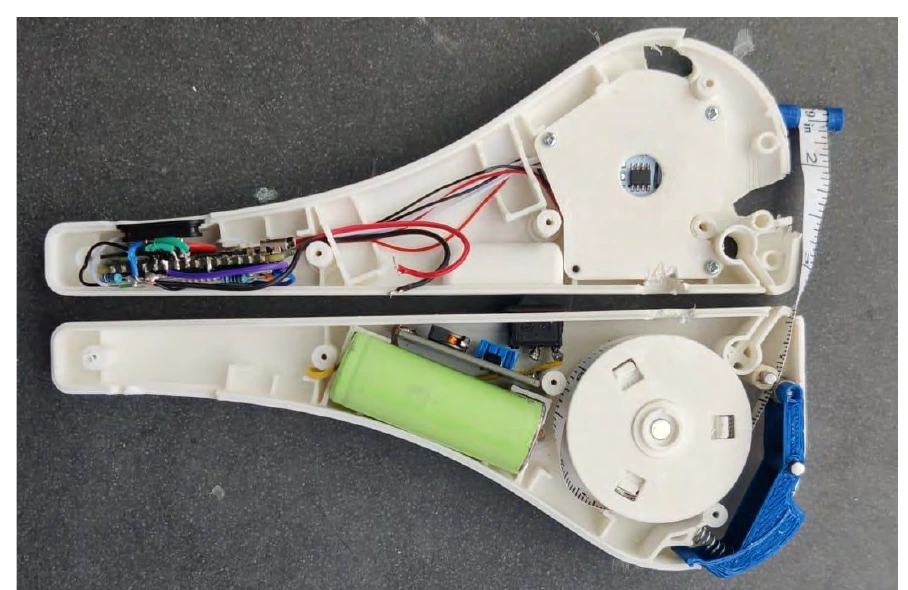
An integrated workflow
The companion application guides volunteers through measurements and the creation of a digital medical record. A fold-out mat supports infant length measurement, while accessible housings and protected electronics support repair and robustness. Physical prototypes and use-case scenarios demonstrate the proposed system; they are presented as design development rather than a deployed medical product.
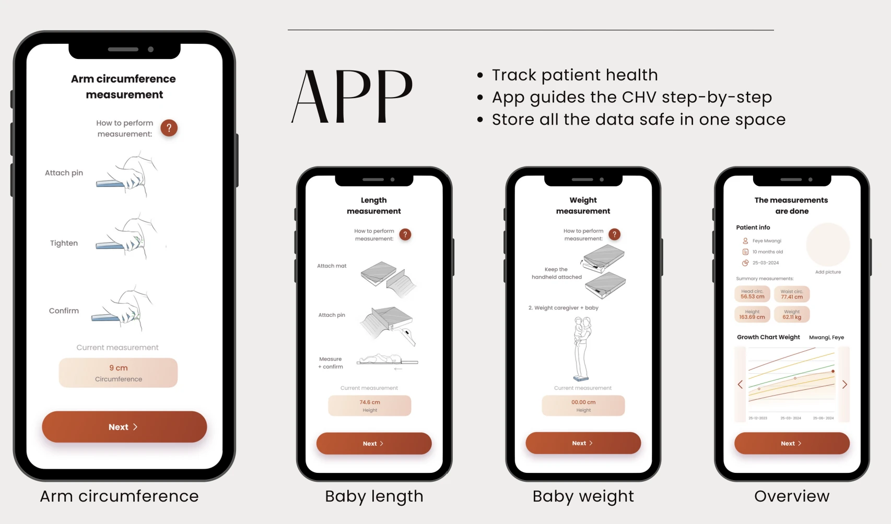
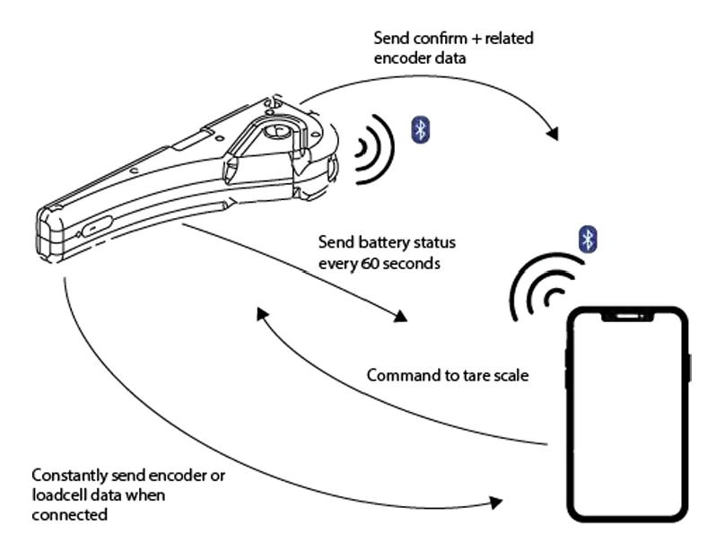
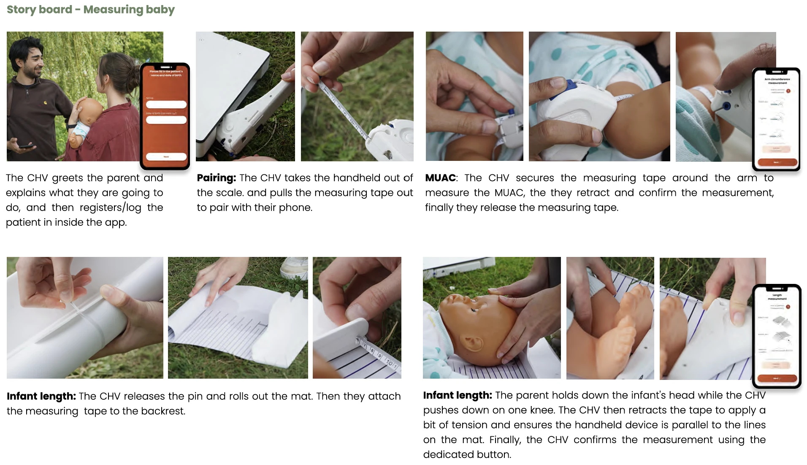
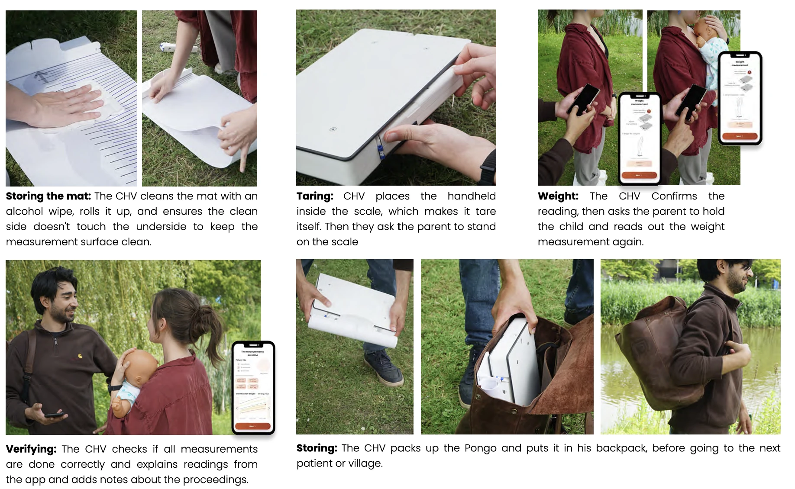